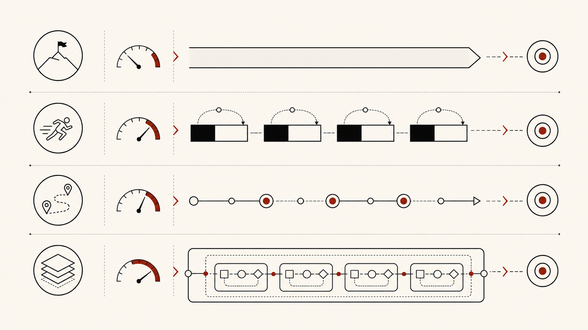

Give the demo product shape
The sprint pins down scope, workflow fit, trust boundaries, evaluation logic, release tradeoffs, and the human review points that cannot stay vague.
A demo is not a roadmap.
Services
Start with the pressure on the decision. Do you need someone to own product calls for a defined period, test an AI idea, review product strategy and UX, improve the team's product process, decide where AI belongs, or tune the loops that make people come back?

Founders often arrive still carrying the roadmap, validation path, and decision rhythm themselves. Edgecaser steps in as fractional product leadership for a defined period, with one job: make product choices clearer and leave the team with a better way to keep making them.
An AI or data idea can be tempting, expensive to pursue, and still too fuzzy to brief cleanly. The sprint narrows the scope, tests workflow fit, and turns the concept into decisions a team can argue with.
Strategy, positioning, feature set, UX, or UI often needs senior product judgment before the team commits. Edgecaser reviews the artifacts and product surface, then names what is clear, what is inconsistent, and which choices need tightening.
Product decisions often get trapped in ad hoc meetings, unclear ownership, or inconsistent artifacts. Edgecaser helps install practical routines: decision cadence, review habits, roadmap hygiene, discovery loops, and handoff norms a small team can keep.
The AI build question often pulls back to product judgment. Edgecaser helps decide where AI belongs, which choices should shape implementation, and which risks need a specialist owner before the work goes further.
Some issues are too narrow for a leadership role and too consequential for a quick opinion. Engagement systems fit here when the product depends on motivation loops, progression, incentives, or repeat-use behavior.
Bring the artifact, roadmap question, AI idea, process problem, or engagement loop that is creating pressure. The call can sort which shape fits.
Primary offer
Founders hit a hard spot before the org chart catches up. The roadmap keeps moving, validation comes in uneven, and engineering needs someone senior enough to make the next call.
Work starts with the goals and artifacts already on the table. Then the stuck choices get named. The aim is a smaller set of decisions the team can act on this week.
Edgecaser shapes the next validation pass around the product pressure the team can see right now. Sometimes that means sharper user questions. Sometimes it means a narrower release slice, AI product judgment, or a meeting rhythm that forces a real call.
Engagements can run 2 to 12 weeks. After the fit call and artifact review, the initial plan covers 2 to 4 weeks so the scope stays honest. Longer work can continue when the problem still fits the relationship.
Ian Brillembourg brings 15+ years across product leadership, AI, mobile, consumer UX, data platforms, analytics, BI, games, and early-stage companies. That background matters less as a credential than as pattern recognition. The useful part is knowing how to turn ambiguous product pressure into decisions a team can make without pretending the ambiguity is gone.
AI product sprints
A narrow prototype can look convincing in a room and still leave the hard question unanswered: where should people trust it, and where should they stop?
The sprint pins down scope, workflow fit, trust boundaries, evaluation logic, release tradeoffs, and the human review points that cannot stay vague.
A demo is not a roadmap.
Before another build cycle starts, the work names how each AI action will be judged and where a person needs to step in.
That makes first-release choices easier to explain inside the team and clearer for future users.
Ian Brillembourg brings 15+ years across product leadership, AI, data, mobile, consumer UX, games, and early-stage companies.
That background keeps the sprint focused on product shape and implementation priorities, where the tradeoffs actually show up.
AI implementation guidance
Edgecaser helps teams decide whether an AI feature belongs in the product at all. Then we define what good output looks like and where a person still owns the call.
A useful AI decision starts with the task and the penalty for being wrong. Drafting a note is a different bet from approving an exception or touching customer data. Some ideas belong in release one. Others need a parked decision, not a louder demo.
A narrow demo can win the room before anyone has named the bar. We frame evaluation as product questions: acceptable error, sample cases, trust boundaries, and what the user sees when the model is unsure.
Approvals, exceptions, missing data, and handoffs are where AI workflows usually start to crack. Edgecaser maps the weak spots, names the human-review moments, and helps the team decide what is ready for product work now.
Specialized depth
Ian's work in games and live operations shows up in one place: products that have to earn a second session. Edgecaser applies that judgment inside fractional product leadership and AI product work, not as a gamification pitch.
Progression, incentives, economy design, consumer UX, and motivation loops matter when repeat behavior is part of the product's economics. The harder question is whether the mechanic is fair to the user. Sometimes the right product call is to leave the badge, streak, or reward loop out.
This work is useful when a team needs to decide what belongs in the roadmap, what should stay out, and where engagement work starts to create pressure instead of value.
Bring this problem when repeat use matters, but the team is not sure whether the answer is product value, onboarding, cadence, incentives, or restraint.
Product fit call
A fit call should answer one thing fast: what shape of product help fits the pressure right now?
Bring the messy parts. Goals, artifacts, constraints, open decisions. We will look at what is creating pressure now, then map the first 2 to 4 weeks to a scope that fits: fractional leadership, an AI product sprint, a product review, team process work, AI implementation guidance, or a contained advisory lane.
Every engagement also includes lifetime access to Shipwright Plus, Edgecaser's private Product Operating System and cross-model conflict harness, plus an optional 30-minute setup call and one year of email support.